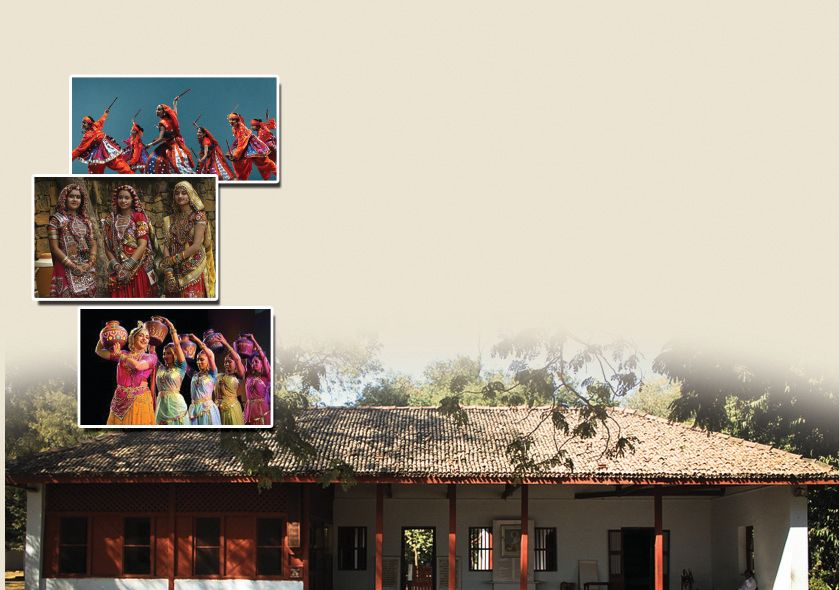
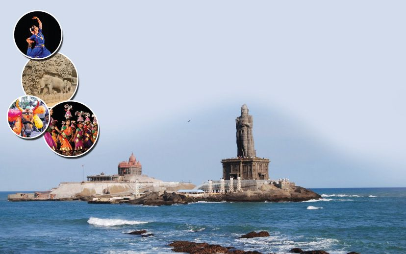
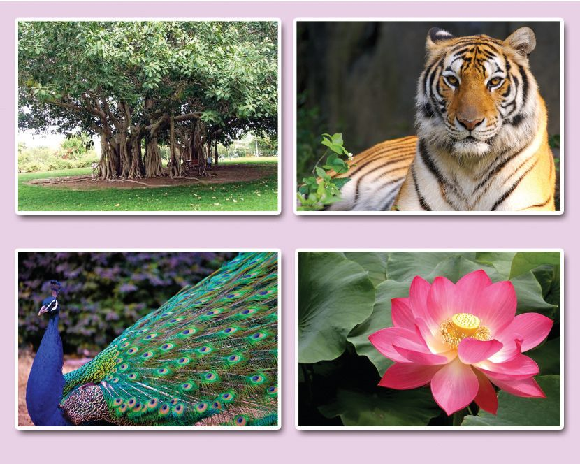
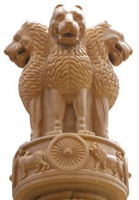

$
കൂട-ുതൺ അറിയാം
അരുണാചൺ പ്രദേശ്
ഇഗ്ല്യയുടെ കിഴത്ഥേ അ‰-സ്ഥു≈ സംÿാനം.
നΩുടെ രാജ്യസ്ഥെ ഏ‰വും വലിയ
ബു≤വിഹാരം ഇവിടെ ÿിതിചെøു- ന്ന ഉ.
തല-ÿാനം ഇ‰ാന-ഗയ്യ-. ഓയ്യത്ഥിഡുക-ളുടെ
പറുദീസ-യാണ് അരുണാചൺ. മിഥു≥ അരുണാച-ലുകാരുടെ പ്രിയ-∏െന്ത മൃഗമാണ്. വിവിധ
ഭാഷകƒ സംസാരിത്ഥുന്ന ജനത്മളാണ് ഈ
സംÿാന-സ്ഥു-≈-ത്.
ജΩുകാശ്മീയ്യ
99
ഇഗ്ല്യയിലൂടെ...
ഇഗ്ല്യയുടെ വടത്ഥേ അ‰-സ്ഥെ സംÿാനം. മലകളുടെയും തടാക-ത്മളുടെയും നദിക-ളുടെയും
നാടാണ് ജΩുകാശ്മീയ്യ. ഇഗ്ല്യയിലെ ഏ‰വും
വലിയ ശു≤-ജല-തടാക-മായ വൂളായ്യ ശ്രീനഗറിലാണ്. ദാൺ തടാകവും പ്രസി-≤-മാണ്. ഉയ്യദു,
കാശ്മീരി എന്നിവയാണ് മുഖ്യ ഭാഷകƒ. ഇവിടസ്ഥെ പ്രധാന നൃസ്ഥരൂപ-ത്മളാണ് ഹഫിസ,
ബണ്ണാ നാഗ്മ, റഫ് എന്നിവ. ജΩുകാശ്മീരിന്
ര≠് തല-ÿാന-ത്മളു-≠്. ശൈത്യകാലസ്ഥെ
തല- ÿ ആ- ന - മ ആണ് ജΩു. വേനൺത്ഥാ- ല സ്ഥെ
തല-ÿാനം ശ്രീനഗയ്യ ആണ്.
Page 36
Figure fig_ch03_p036_01 (Page 36)

Figure fig_ch03_p036_02 (Page 36)

Figure fig_ch03_p036_03 (Page 36)
തമിഴ്നാട്
ഇഗ്ല്യയുടെ തെത്ഥേ അ‰-സ്ഥെ സംÿാനം. പ്രധാന ഭാഷ
തമിഴ്. കേരളസ്ഥി‚െ അയൺസം-ÿാന-മാണിത്. ഭരത-നാട്യസ്ഥി‚െ നാട് . ചെന്നൈ ആണ് തല- ÿ ആനം. പന്തു വസ്ത്രസ്ഥിന് പേരുകേന്ത കാഞ്ചീപുരം തമിഴ്നാന്തിലാണ്.
ഗുജറാസ്ഥ്
ഇഗ്ല്യയുടെ പടി-™ാറേ അ‰-സ്ഥു≈ സംÿാനം. മഹാ-flാഗാ-'ിയുടെ ജ∑ംകൊ≠് പ്രശസ്തമായ പോയ്യബഗ്ലയ്യ ഇവിടെയാണ്. ഗായ്യബനൃസ്ഥമാണ് ഗുജറാസ്ഥി‚െ തനത് കലാരൂപം.
ഇഗ്ല്യയിൺ ഏ‰വും കൂടുതൺ കടൺസ്ഥീര-മു≈
സംÿാനവും ഗുജറാസ്ഥാണ്. തല-ÿാനം
ഗാ'ിന-ഗയ്യ. പ്രധാന ഭാഷ ഗുജറാസ്ഥി-.
പരിസ-രപ-ഠനം
നΩുടെ രാജ്യസ്ഥെ ഏതാനും സംÿാന-ത്മƒ നിത്മƒ പരിച-യ-∏െന്ത-√ോ.
$
100
രബീμ്രനാഥ- ടാഗോയ്യ
ന-Ωുടെ ദേശീയ-ഗാനം രചിണ്ണത് രബീ-μ്രനാഥ- ടാഗോയ്യ
ആണ്. അദ്ദേഹം പ›ിമ-ബംഗാളിലെ കൊൺ-ത്ഥസ്ഥയിലാണ് ജനിണ്ണത്. ചെറു-∏ം മുതൺതന്നെ കവിത-കƒ
എഴുതിസ്ഥുട-ത്മി. ഗീതാഞ്ജലി എന്ന കൃതി സാഹിത്യസ്ഥിനു-≈ നൊബേൺ സΩാനം നേടി. അദ്ദേഹം
ശാഗ്ലിനികേത-നിൺ തുട-ത്ഥമിന്ത വിദ്യാല-യമാണ് പിന്നീട്
വിശ്വഭാര-തി സയ്യവകലാശാല-യായി മാറിയ-ത്.
ദേശീയ-ഗീതം
വμേമാതരം... എന്ന് തുടത്മുന്ന ഗാനമാണ്
നΩുടെ ദേശീയഗീതം. ബന്നിംചμ്ര ചാ‰യ്യജിയാണ്
ഇത് രചിണ്ണത്.
ദേശീയപതാക
പരിസ-രപ-ഠനം
നΩുടെ ദേശീയപ-താക-യിൺ മുകƒ ഭാഗസ്ഥ് കുന്നുമം, മധ്യസ്ഥിൺ വെ≈,
താഴെ പണ്ണ എന്നിത്മനെ 3 നിറത്മളു-≠്. വെ≈- നിറ-സ്ഥി‚െ നടുവിലായി
നാവിക നീല നിറസ്ഥിൺ 24 ആരത്ഥാലുക-ളു≈ അശോകചക്രമു-≠്.
നΩുടെ ദേശീയ-പതാക രൂപകൺ∏ന ചെയ്തത് പിംഗളി വെന്ന-ø-യാണ്.
104
Page 41
Figure fig_ch03_p041_01 (Page 41)

Figure fig_ch03_p041_02 (Page 41)

Figure fig_ch03_p041_03 (Page 41)
ദേശീയമുദ്ര
സാര- ന ആഥിൺ അശോക ചക്ര- വ യ്യസ്ഥി
ÿാപിണ്ണ സ്തൂപസ്ഥിൺ നിന്നാണ് നΩുടെ
ദേശീയ-മുദ്ര സ്വീകരിണ്ണിന്തു≈ത്. നാല്ദിത്ഥിലേത്ഥ് നോത്ഥുന്ന നാല് സിംഹത്മളും
ചുവന്തിൺ ധയ്യമച-ക്രവും ചു‰ിലുമായി ആന,
കുതിര, കാള എന്നീ രൂപത്മളും ഉ≠്.
ചുവടെ "സത്യമേവ ജയതേ' എന്ന് എഴുതിയിന്തുമു-≠്.